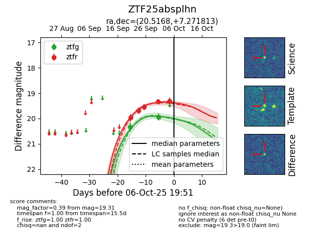
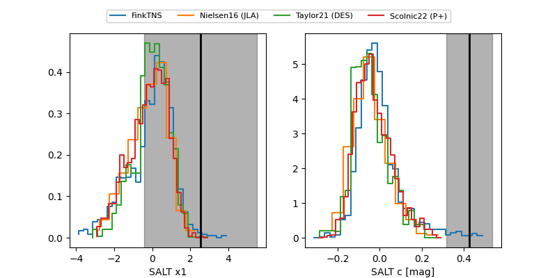

FINK: ZTF25absplhn
Lasair: ZTF25absplhn
ALeRCE: ZTF25absplhn
ZTF25absplhn (ztf,fink)
equatorial (ra, dec) = (20.5168,+7.27181)
galactic (l, b) = (136.1909,-54.80950)


last ztfg=19.95, ztfr=19.31
2 ztfg, 5 ztfr detections